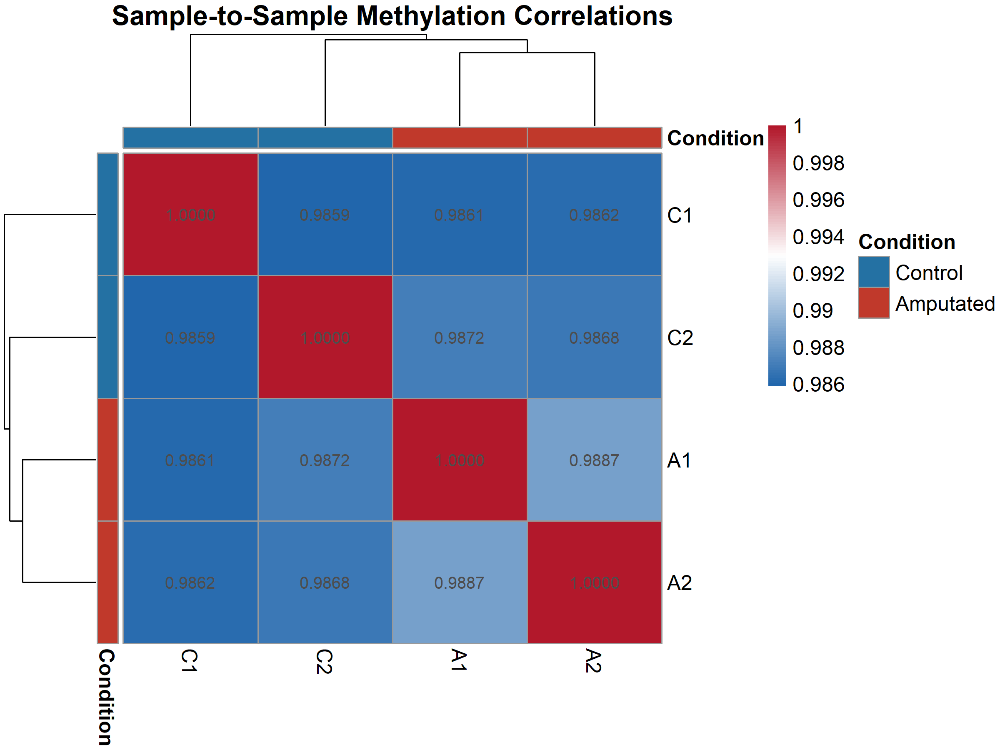
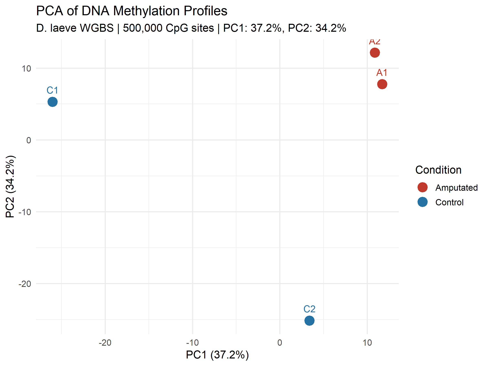
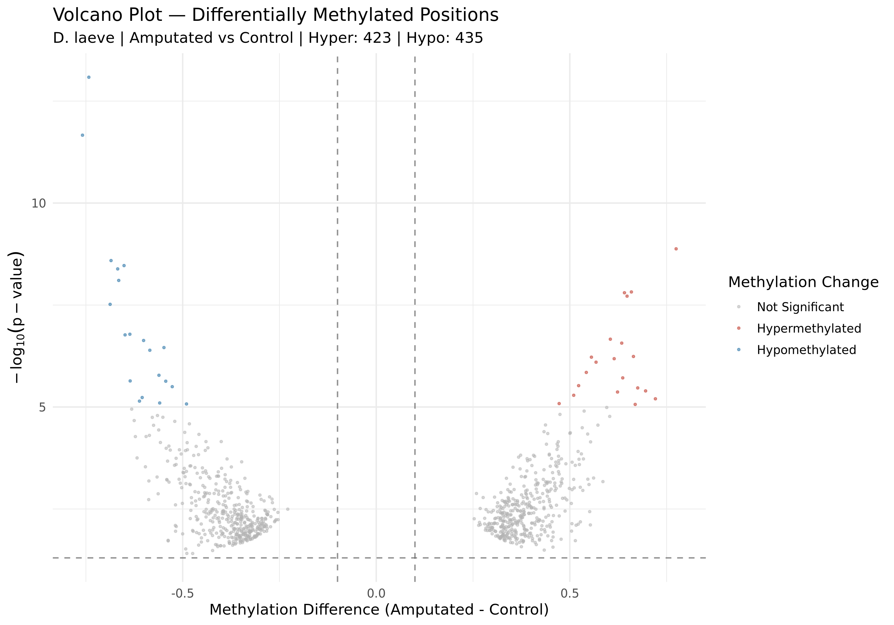
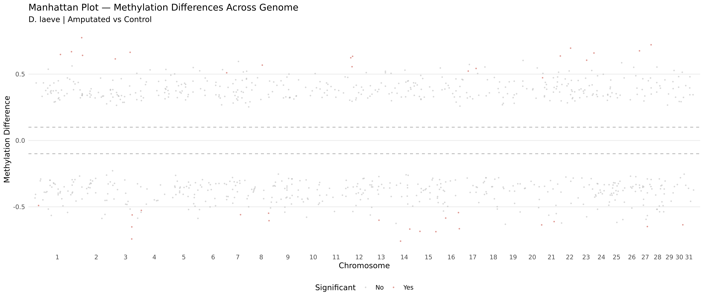
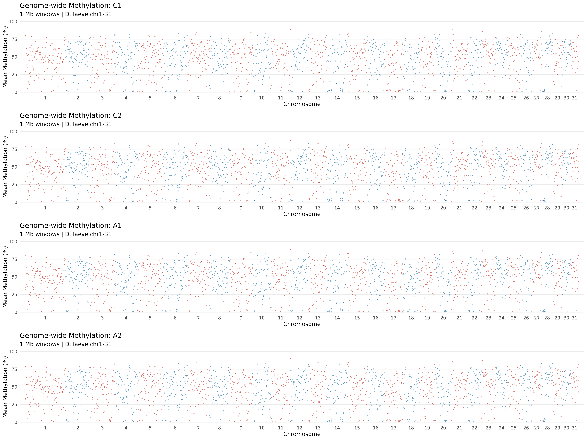
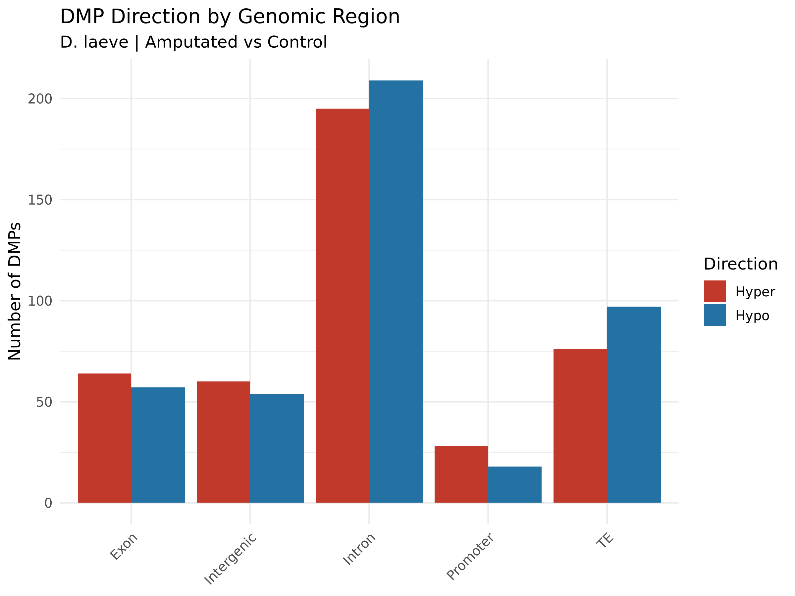

Adapted from NGS101 tutorial for D. laeve tail regeneration | Generated: 2026-03-18
Design: 2 Control (C1, C2) vs 2 Amputated (A1, A2) tail samples
| Total CpG sites analyzed | 200,000 |
| Significant DMPs (FDR < 0.05, |diff| > 10%) | 858 |
| Significant DMRs | 0 |
| Hypermethylated DMPs (Amputated > Control) | 423 |
| Hypomethylated DMPs (Amputated < Control) | 435 |
| Mean DMR length (bp) | N/A |
| Mean CpGs per DMR | N/A |
| Sample | Condition | Sites | Mean Beta | Median Beta | High (>0.8) | Low (<0.2) | Intermediate |
|---|---|---|---|---|---|---|---|
| C1 | Control | 200,000 | 0.5220 | 0.7500 | 92,535 | 82,304 | 25,161 |
| C2 | Control | 200,000 | 0.5190 | 0.7273 | 89,380 | 81,615 | 29,005 |
| A1 | Amputated | 200,000 | 0.5230 | 0.7600 | 93,657 | 82,263 | 24,080 |
| A2 | Amputated | 200,000 | 0.5229 | 0.7500 | 92,338 | 82,170 | 25,492 |








| Region | Count | % |
|---|---|---|
| Intron | 404 | 47.1 |
| TE | 173 | 20.2 |
| Exon | 121 | 14.1 |
| Intergenic | 114 | 13.3 |
| Promoter | 46 | 5.4 |

Tutorial adaptation notes: